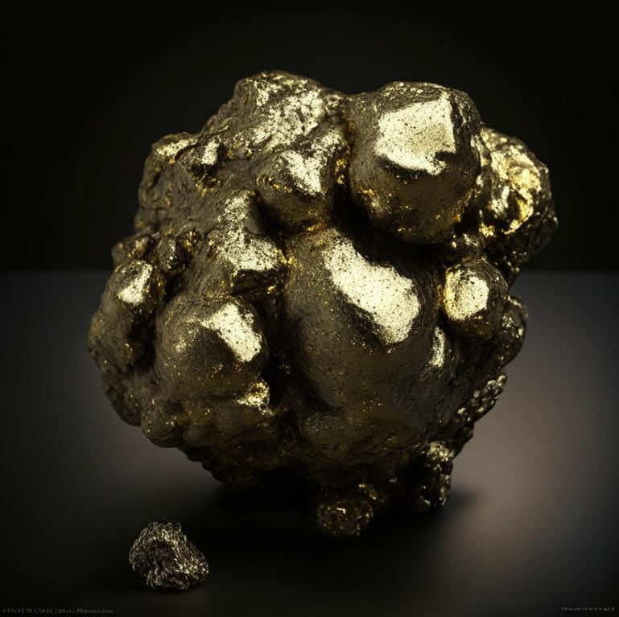

Резерфордий
Резерфо́рдий (Rf), лат. Rutherfordium, до 1997 года в СССР и России был известен как курчато́вий (Ku) — 104-й элемент в периодической системе. Резерфордий — высокорадиоактивный искусственно синтезированный элемент, период полураспада наиболее стабильного из известных изотопов (267Rf) составляет около 1,3 часа. Этот элемент не может где-либо использоваться и про него мало что известно, поскольку он никогда не был получен в макроскопических количествах. Резерфордий — первый трансактиноидный элемент, его предсказанные химические свойства близки к гафнию.
Приоритет открытия резерфордия делят СССР и США: в 1964 г. в СССР Г. Н. Флёровым с сотрудниками при облучении мишени из 242Pu ускоренными ионами 22Ne получены изотопы 259Rf и 260Rf; в 1969 г. в США группой учёных под руководством А. Гиорсо получены изотопы 257Rf и 261Rf. Назван в честь Э. Резерфорда; в отечественной литературе до 1997 г. использовалось название «курчатовий» (символ Ku).

Резерфордий стимулирует много научных исследований в области физики и химии, которые направлены на изучение свойств трансурановых элементов.Есть гипотезы, что резерфордий может быть использован в будущем для создания материалов с уникальными свойствами.